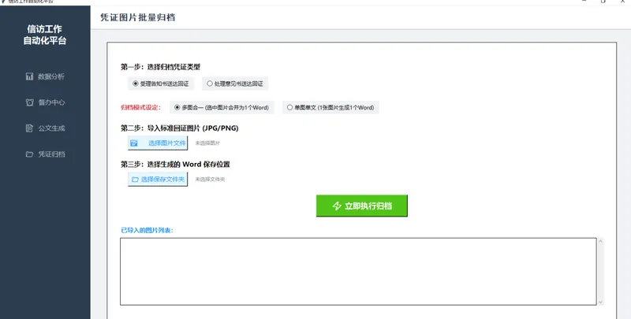

FEATURE 01
三步归档流程
第一步：选择归档凭证类型（受理告知书送达回证或处理意见书送达回证）
第二步：导入标准回证图片（JPG/PNG）
第三步：一键执行归档
系统自动将图片适配到 A4 纸张尺寸（21×29.7cm），边距为 0，保证打印后与实物回证 1:1 对应。
FEATURE 02
双模式归档 + 多线程
多图合一：选中多张图片合并为 1 个 Word 文档——每张图片一页，适合同一案件的整套回证材料。
单图单文：1 张图片生成 1 个独立 Word 文件——适合批量处理多个案件的送达回证。
多线程异步处理：归档操作在 daemon 线程中执行，通过 self.after 回调更新 UI。按钮文字实时显示进度（如"处理中... (3/8)"），GUI 不会因大文件写入而冻结。自动检测文件名冲突并递增编号。
THE WHY
为什么需要凭证归档模块？
信访案件的送达回证是法定凭证，需要长期保存。传统方式是：用手机拍照 → 传到电脑 → 逐个插入 Word → 调整大小 → 打印。一个案件如果有 5 张回证，这个流程大约需要 15 分钟。本模块将整个流程压缩为 3 步、约 10 秒。